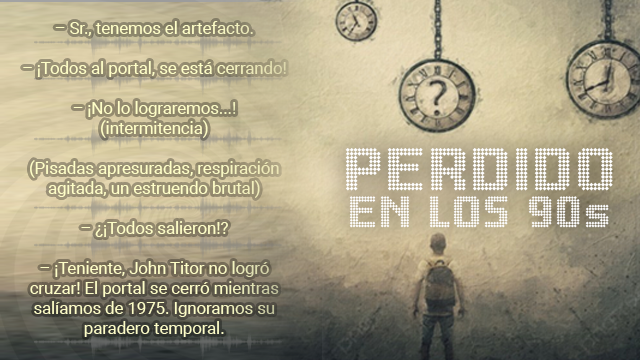
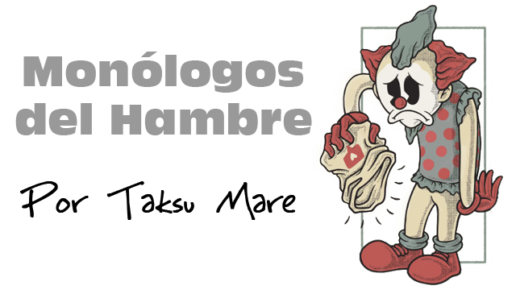
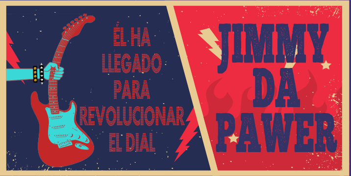
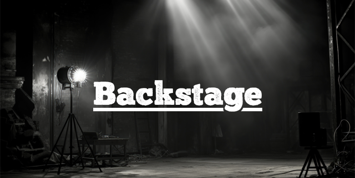
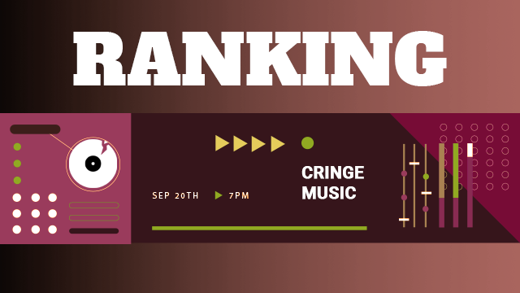

PROGRAMACIÓN
No hacemos radio para todos, la hacemos para quienes sienten la música como un grito, una trinchera, una descarga.
Por eso, aquí tienes nuestra programación:
Directo, crudo y sin maquillaje.
El ruido comienza cuando tú decidas darle play a nuestro canal de Streaming o ubicanos en el 102.7 fm

Programa conducido por Jhon Titor, escuchalo de lunes a viernes de 3 a 5 pm

Programa conducido por Taksu Mare, escuchalo de lunes a viernes de 6 a 9 am

Jimmy da Power te espera todos los sábados a las 4pm

Programa conducido por Atomika, escuchalo todos los Domingos a las 11 am

Programa conducido por Atomika, escuchalo todos los Sábados y Domingos a las 12 am